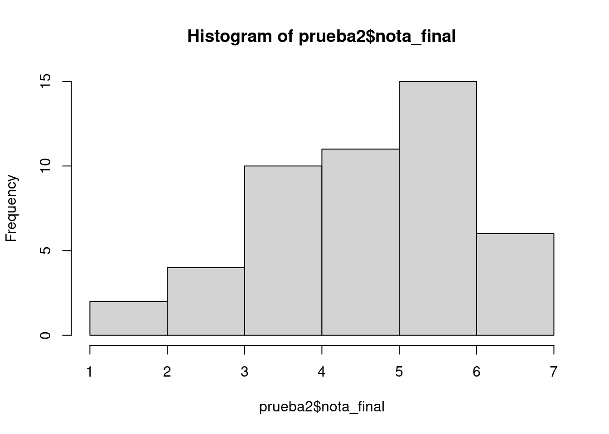
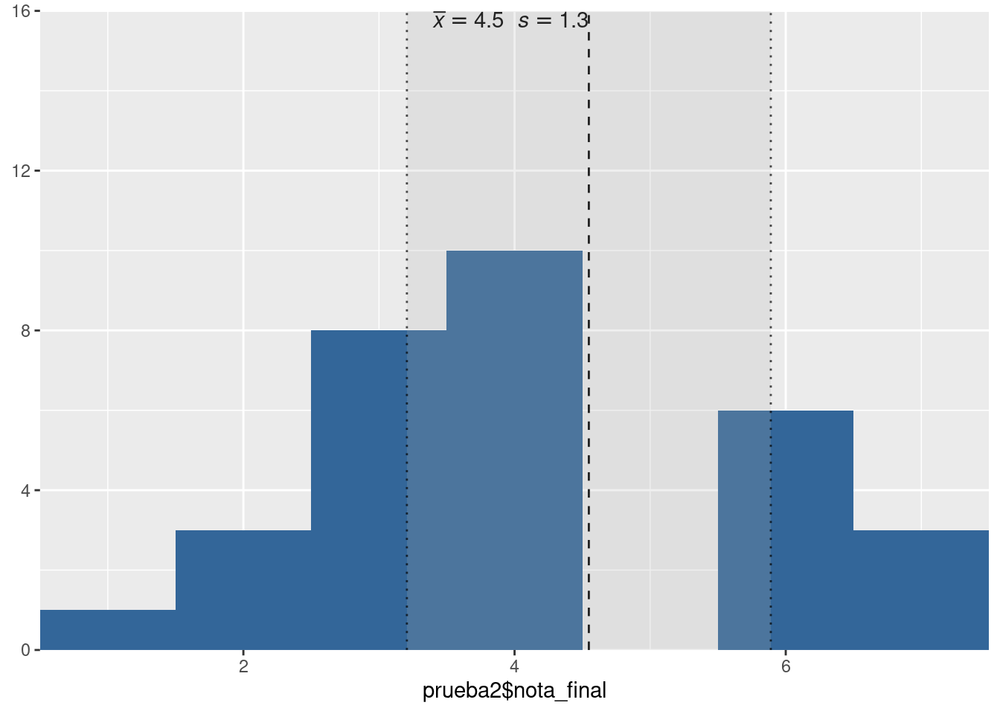
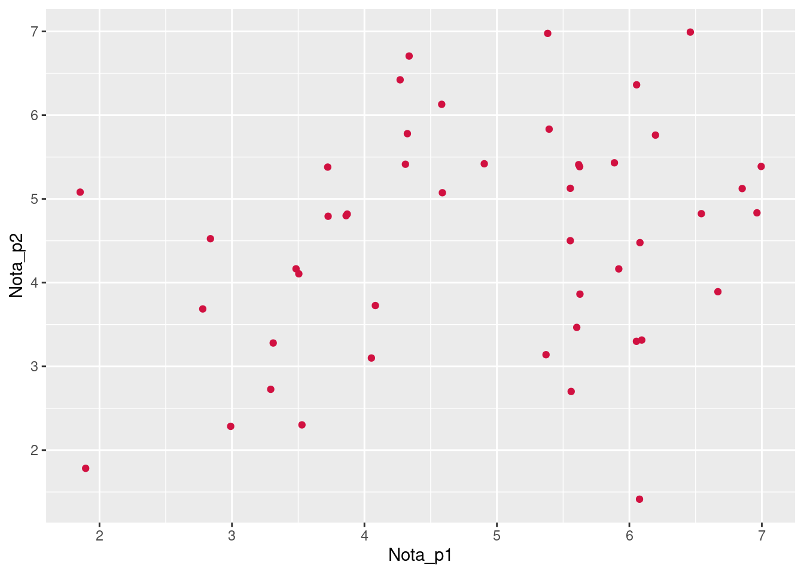

pacman::p_load(googlesheets4, dplyr, sjmisc,sjPlot, kableExtra, sjlabelled )Reporte Notas - Estadística Correlacional 2023
Prueba 1
Librerías & datos
[1] "N" "Persona" "p1-a" "p1-b" "p2"
[6] "p3" "p4" "p5" "pje" "Nota 60%"
[11] "corrector/a" "decimas" "nota_final" "Recorrección" "...15"
[16] "...16" load("prueba1.Rdata")Etiquetados
# Label variables
prueba1$p1a <- set_label(x = prueba1$p1a,
label = "Cálculo Pearson")
prueba1$p1b <- set_label(x = prueba1$p1b,
label = "Interpretación Pearson")
prueba1$p2 <- set_label(x = prueba1$p2,
label = "Limitación Pearson")
prueba1$p3 <- set_label(x = prueba1$p3,
label = "Coeficiente determinación")
prueba1$p4 <- set_label(x = prueba1$p4,
label = "Spearman")
prueba1$p5 <- set_label(x = prueba1$p5,
label = "Perdidos matrices")Tabla descriptiva
prueba1 %>% descr(., show = c("label","range", "mean", "sd", "n"))%>% kable(.,"markdown", digits=2)| var | label | n | mean | sd | range | |
|---|---|---|---|---|---|---|
| 2 | p1a | Cálculo Pearson | 79 | 1.78 | 1.29 | 3 (0-3) |
| 3 | p1b | Interpretación Pearson | 79 | 1.66 | 0.78 | 3 (0-3) |
| 4 | p2 | Limitación Pearson | 79 | 1.53 | 0.69 | 2 (0-2) |
| 5 | p3 | Coeficiente determinación | 79 | 1.50 | 0.64 | 2 (0-2) |
| 6 | p4 | Spearman | 79 | 1.39 | 0.81 | 2 (0-2) |
| 7 | p5 | Perdidos matrices | 79 | 0.99 | 0.89 | 2 (0-2) |
| 1 | nota_final | nota_final | 79 | 4.54 | 1.40 | 6 (1-7) |
Gráficos descriptivos
hist(prueba1$nota_final)
plot_frq(data = prueba1$nota_final,type = "hist",show.mean = T)
prueba1 <- prueba1 %>% mutate(notas_cat=cut(nota_final, breaks=c(-Inf,4,5,6, Inf), labels=c("Menor a 4.0","4.0-5.0","5.0-6.0","6.0-7.0")))
frq(prueba1$notas_cat)x <categorical>
# total N=88 valid N=79 mean=2.23 sd=1.13
Value | N | Raw % | Valid % | Cum. %
-------------------------------------------
Menor a 4.0 | 30 | 34.09 | 37.97 | 37.97
4.0-5.0 | 14 | 15.91 | 17.72 | 55.70
5.0-6.0 | 22 | 25.00 | 27.85 | 83.54
6.0-7.0 | 13 | 14.77 | 16.46 | 100.00
<NA> | 9 | 10.23 | <NA> | <NA>prueba1 <- prueba1 %>% dplyr::select(-notas_cat)Preguntas y asociaciones
tab_corr(prueba1,
triangle = "lower")| Cálculo Pearson | Interpretación Pearson | Limitación Pearson | Coeficiente determinación | Spearman | Perdidos matrices | nota_final | |
| Cálculo Pearson | |||||||
| Interpretación Pearson | 0.405*** | ||||||
| Limitación Pearson | 0.211 | 0.153 | |||||
| Coeficiente determinación | 0.271* | 0.407*** | 0.267* | ||||
| Spearman | 0.229* | 0.203 | 0.375*** | 0.197 | |||
| Perdidos matrices | 0.063 | 0.127 | 0.435*** | 0.095 | 0.277* | ||
| nota_final | 0.696*** | 0.627*** | 0.619*** | 0.524*** | 0.583*** | 0.539*** | |
| Computed correlation used pearson-method with listwise-deletion. | |||||||
plot_scatter(prueba1, p1a, p1b)
Consistencia interna
pacman::p_load(ltm)
preguntas <- prueba1 %>% dplyr::select(-nota_final)
cronbach.alpha(na.omit(preguntas))
Cronbach's alpha for the 'na.omit(preguntas)' data-set
Items: 6
Sample units: 79
alpha: 0.634Prueba 2
Datos
load("prueba2.Rdata")Adecuación preguntas
La prueba tiene dos formas: A y B, la única diferencia es en el orden de las preguntas, la forma A parte por la pregunta sobre identificación con la izquierda, mientras que en la forma B la primera pregunta es la de CASEN. Para poder realizar un correcto análisis de las preguntas vamos a adaptar la forma B a la A.
frq(prueba2$forma)x <character>
# total N=87 valid N=72 mean=1.50 sd=0.50
Value | N | Raw % | Valid % | Cum. %
-------------------------------------
A | 36 | 41.38 | 50 | 50
B | 36 | 41.38 | 50 | 100
<NA> | 15 | 17.24 | <NA> | <NA>A <- subset(prueba2, subset = prueba2$forma=="A")
B <- subset(prueba2, subset = prueba2$forma=="B")
dim(A)[1] 36 8dim(B)[1] 36 8descr(B, show = "mean")
## Basic descriptive statistics
var mean
p1a 1.33
p1b 1.36
p1c 1.31
p2a 1.39
p2b 1.28
p2c 1.32
nota_final 4.58B <- B %>% rename("p1a"="p2a",
"p1b"="p2b",
"p1c"="p2c",
"p2a"="p1a",
"p2b"="p1b",
"p2c"="p1c")
descr(B, show = "mean")
## Basic descriptive statistics
var mean
p2a 1.33
p2b 1.36
p2c 1.31
p1a 1.39
p1b 1.28
p1c 1.32
nota_final 4.58prueba2 <- rbind(A,B)Etiquetados
# Label variables
prueba2$p1a <- set_label(x = prueba2$p1a,
label = "H1 promedio direccional")
prueba2$p1b <- set_label(x = prueba2$p1b,
label = "Prueba promedios")
prueba2$p1c <- set_label(x = prueba2$p1c,
label = "Rechazo H0")
prueba2$p2a <- set_label(x = prueba2$p2a,
label = "H1 proporcion no direccional")
prueba2$p2b <- set_label(x = prueba2$p2b,
label = "Error tipo 1")
prueba2$p2c <- set_label(x = prueba2$p2c,
label = "Intervalo confianza")Tabla descriptiva
prueba2 %>% descr(., show = c("label","range", "mean", "sd", "n"))%>% kable(.,"markdown", digits=2)| var | label | n | mean | sd | range | |
|---|---|---|---|---|---|---|
| 2 | p1a | H1 promedio direccional | 72 | 1.36 | 0.63 | 2 (0-2) |
| 3 | p1b | Prueba promedios | 72 | 1.24 | 0.86 | 2 (0-2) |
| 4 | p1c | Rechazo H0 | 72 | 1.27 | 0.70 | 2 (0-2) |
| 5 | p2a | H1 proporcion no direccional | 72 | 1.26 | 0.68 | 2 (0-2) |
| 6 | p2b | Error tipo 1 | 72 | 1.27 | 0.79 | 2 (0-2) |
| 7 | p2c | Intervalo confianza | 72 | 1.14 | 0.72 | 2 (0-2) |
| 1 | nota_final | nota_final | 72 | 4.37 | 1.23 | 5.6 (1.4-7) |
Gráficos descriptivos
hist(prueba2$nota_final)
plot_frq(data = prueba2$nota_final,type = "hist",show.mean = T)
prueba2 <- prueba2 %>% mutate(notas_cat=cut(nota_final, breaks=c(-Inf,4,5,6, Inf), labels=c("Menor a 4.0","4.0-5.0","5.0-6.0","6.0-7.0")))
frq(prueba2$notas_cat)x <categorical>
# total N=72 valid N=72 mean=2.06 sd=1.02
Value | N | Raw % | Valid % | Cum. %
-------------------------------------------
Menor a 4.0 | 28 | 38.89 | 38.89 | 38.89
4.0-5.0 | 19 | 26.39 | 26.39 | 65.28
5.0-6.0 | 18 | 25.00 | 25.00 | 90.28
6.0-7.0 | 7 | 9.72 | 9.72 | 100.00
<NA> | 0 | 0.00 | <NA> | <NA>prueba2 <- prueba2 %>% dplyr::select(-notas_cat)Preguntas y asociaciones
prueba2 <- prueba2 %>% dplyr::select(-forma)
tab_corr(prueba2,
triangle = "lower")| H1 promedio direccional | Prueba promedios | Rechazo H0 | H1 proporcion no direccional | Error tipo 1 | Intervalo confianza | nota_final | |
| H1 promedio direccional | |||||||
| Prueba promedios | 0.295* | ||||||
| Rechazo H0 | 0.397*** | 0.488*** | |||||
| H1 proporcion no direccional | 0.108 | 0.094 | -0.060 | ||||
| Error tipo 1 | -0.204 | 0.039 | 0.031 | -0.039 | |||
| Intervalo confianza | 0.047 | 0.206 | 0.308** | 0.169 | 0.351** | ||
| nota_final | 0.469*** | 0.677*** | 0.650*** | 0.370** | 0.404*** | 0.631*** | |
| Computed correlation used pearson-method with listwise-deletion. | |||||||
Consistencia interna
pacman::p_load(ltm)
preguntas <- prueba2 %>% dplyr::select(-nota_final)
cronbach.alpha(na.omit(preguntas))
Cronbach's alpha for the 'na.omit(preguntas)' data-set
Items: 6
Sample units: 72
alpha: 0.513Pruebas 1 & 2
# rescatar ID secuencial
prueba1 <- read_sheet('https://docs.google.com/spreadsheets/d/1ahL6yZpDRUmFFnilWHqMKchNqzVzAo7YZiA401crxGA/edit?usp=sharing', sheet = "Prueba 1 2023-10-10")
prueba2 <- read_sheet('https://docs.google.com/spreadsheets/d/1lnZ7ojc3jxAMTFwC5Y_Wble08YaONTNTaPdz7KnDOXI/edit#gid=1600039458', sheet ="Prueba 2 2023-11-19")
prueba1 <- prueba1 %>% dplyr::select(RUT,Nota) %>% rename("Nota_p1"="Nota")
prueba2 <- prueba2 %>% dplyr::select(RUT,Nota) %>% rename("Nota_p2"="Nota")
pruebas <- merge(prueba1, prueba2, by = 'RUT')
plot_scatter(pruebas, Nota_p1, Nota_p2)
pruebas_c <-na.omit(pruebas)
cor(pruebas_c$Nota_p1, pruebas_c$Nota_p2)[1] 0.2952938